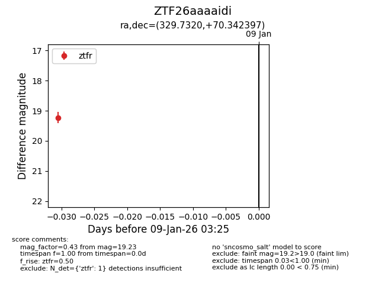
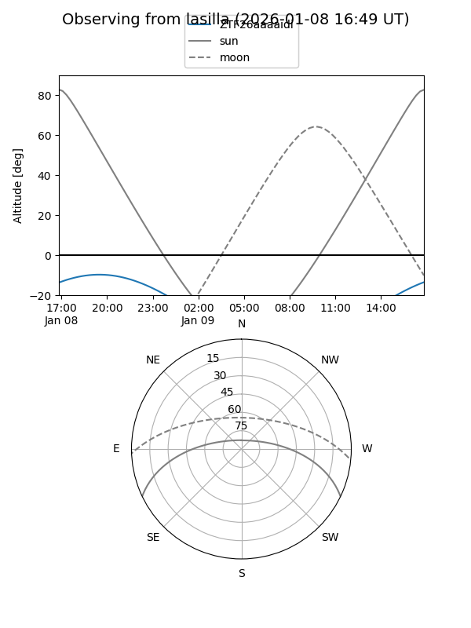
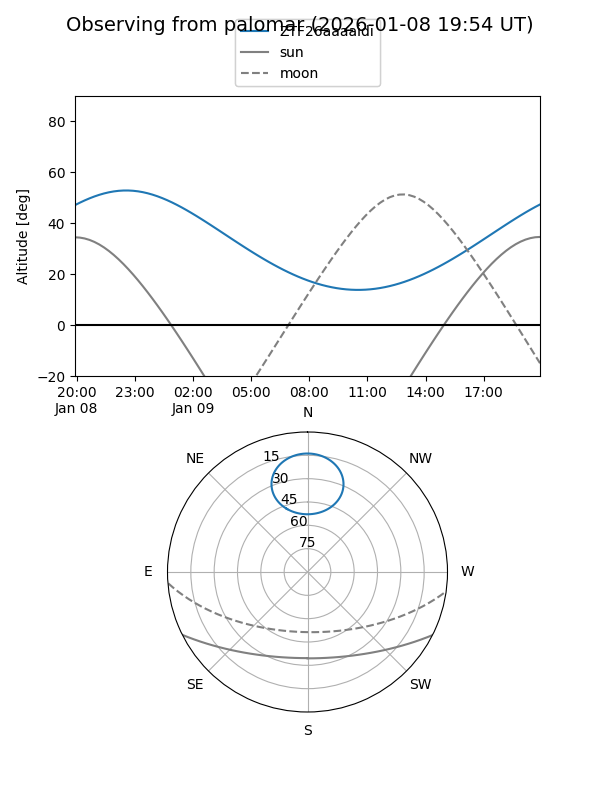

ZTF26aaaaidi
Target ZTF26aaaaidi at 2026-01-09 03:25
Aliases and brokers:
FINK:
Lasair:
ALeRCE:
alt names
ZTF26aaaaidi (ztf,fink_ztf)
Coordinates:
equatorial (ra, dec) = 329.7320,+70.34240
equatorial (HMS+DMS) = 21:58:55.67,+70:20:32.63
galactic (l, b) = (109.3249,+12.17530)
Flags:
Photometry:
last ztfr=19.23
1 ztfr detections
Lightcurve

Visibility


Additional plots